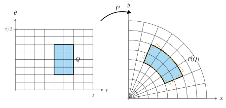

2.6 적분과 변수변환 공식
이 절의 목표
- 직사각형과 적분 영역 위의 다중적분, 부피가 \(0\)인 집합, 푸비니 정리, 그린 정리를 복습하고 필요한 가정을 정확히 말할 수 있다.
- 선형사상이 부피를 \(\abs{\det A}\)배 한다는 사실과 변수변환 공식 \(\int_{F(D)} f = \int_D (f \circ F)\abs{\det DF}\)를 진술하고, 그 증명의 흐름을 설명할 수 있다.
- 극좌표와 구면좌표로 넓이와 부피를 계산할 수 있다.
- 변수변환 공식에서 단사성과 절댓값이 왜 필요한지 예로 설명할 수 있다.
선수 지식
- 정의 2.3.1 (미분동형사상), 예 2.3.10 (극좌표 사상), 연습 2.3.3 (구면좌표)
- 명제 2.2.8 (평균값 부등식)
- 정리 1.6.8 (행렬식의 성질), 따름정리 1.6.9 (그람 행렬식과 부피)
- 1변수 리만 적분과 치환적분. 다변수 미적분에서 배운 이중·삼중적분의 계산
동기
2.3절에서 2.5절까지는 미분동형사상을 “좌표를 바꾸는 것”으로 보고, 좌표를 잘 바꾸면 사상이 단순해짐을 보았다. 좌표를 바꾸면 적분은 어떻게 되는가? 미분기하에서 이 질문은 피할 수 없다. 곡면의 넓이는 매개화를 써서 적분으로 계산하는데(7장), 매개화는 하나로 정해지지 않는다. 넓이가 매개화에 무관하려면 “적분 변수를 바꾸는 규칙”이 있어야 한다.
익숙한 예에서 시작하자. 원판의 넓이를 극좌표로 계산할 때 \(dx\,dy = r\,dr\,d\theta\)라고 배웠다. 이 \(r\)은 어디서 오는가? (2.1.5)에서 \(\det DP(r, \theta) = r\)이었다. 작은 직사각형 \([r, r + \Delta r] \times [\theta, \theta + \Delta\theta]\)는 \(P\)에 의해 넓이가 거의 \(r\,\Delta r\,\Delta\theta\)인 부채꼴 조각으로 간다. 선형근사 \(DP\)가 넓이를 \(\abs{\det DP}\)배 하기 때문이다(따름정리 1.6.9: \(\abs{\det}\)은 평행사변형의 넓이다). 이 절은 이 관찰을 정리로 만든다.

다중적분 복습
이 절에서 쓰는 적분은 리만 적분이다. 미적분학에서 배운 내용을 정의와 정리로 정리해 두고, 증명은 참고문헌으로 돌린다 [Sp-CoM 3장], [Lee-ISM 부록 C]. 닫힌 직사각형은 \(R = [a^1, b^1] \times \dots \times [a^n, b^n]\) (\(a^i \lt b^i\)) 꼴의 집합이고, 그 부피는 \(\vol(R) = \prod_i (b^i - a^i)\)이다. 각 구간 \([a^i, b^i]\)를 유한개의 점으로 나누면 \(R\)이 작은 닫힌 직사각형들로 나뉘는데, 이것을 \(R\)의 분할이라 한다.
정의 2.6.1 (직사각형 위의 적분, integral over a rectangle). \(f\colon R \to \R\)가 유계라 하자. 분할 \(\mathcal{P}\)의 작은 직사각형 \(S\)마다 \(m_S = \inf_S f\), \(M_S = \sup_S f\)로 두고 아래합 \(L(f, \mathcal{P}) = \sum_S m_S\vol(S)\), 위합 \(U(f, \mathcal{P}) = \sum_S M_S\vol(S)\)을 만든다. 모든 분할에 대한 아래합의 상한과 위합의 하한이 같으면 \(f\)가 \(R\)에서 적분가능(integrable)하다고 하고, 그 공통값을 \(\int_R f\)로 쓴다.
어떤 함수가 적분가능한지는 “불연속점이 얼마나 많은가”로 판정한다. 그 크기를 재는 말이 다음 정의다.
정의 2.6.2 (부피가 \(0\)인 집합, set of content zero). \(A \subseteq \R^n\)이라 하자. 모든 \(\varepsilon \gt 0\)에 대하여 \(A\)를 덮는 유한개의 닫힌 직사각형으로서 부피의 합이 \(\varepsilon\)보다 작은 것이 있으면, \(A\)를 부피가 0인 집합(set of content zero)이라 한다.
예 2.6.3 (부피가 \(0\)인 집합). (a) 유한집합은 부피가 \(0\)이다. 각 점을 변의 길이 \(\delta\)인 정육면체로 덮으면 부피의 합이 \(N\delta^n\)이고, \(\delta\)를 줄이면 된다. 부피가 \(0\)인 집합의 유한 합집합과 부분집합도 부피가 \(0\)이다.
(b) 매끄러운 사상의 저차원 상. \(k \lt n\)이고 \(K \subseteq \R^k\)가 닫힌 직사각형이며, \(G\)가 \(K\)를 포함하는 열린집합에서 \(\R^n\)으로 가는 \(C^1\)급 사상이면 \(G(K)\)는 부피가 \(0\)이다. 이유. 명제 1.5.7에 의해 \(\norm{DG(x)}\)는 \(DG(x)\)의 성분의 제곱합의 제곱근 이하이고, 이것은 \(x\)의 연속함수이다. 닫힌 직사각형 \(K\)는 유계인 닫힌집합이므로 이 함수는 \(K\)에서 유계이다. 이것은 최댓값·최솟값 정리로, 미적분학에서 알려진 사실로 받아들인다 (2.1절 준비. 증명은 정리 3.6.7과 정리 3.6.10). 그 상한을 \(M\)이라 하자. \(K\)의 각 변을 \(N\)등분해 \(N^k\)개의 작은 직사각형으로 나누면, 각 조각의 지름은 \(K\)의 지름 \(d\)의 \(1/N\) 이하이고 조각은 볼록이므로 평균값 부등식(명제 2.2.8)에 의해 그 상은 한 변이 \(2Md/N\)인 정육면체 안에 들어간다. 부피의 합은 \(N^k(2Md/N)^n = (2Md)^nN^{k-n}\)이고, \(k \lt n\)이므로 \(N \to \infty\)일 때 \(0\)으로 간다. 특히 \(\R^2\)의 원 \(\{(a\cos t, a\sin t) : t \in [0, 2\pi]\}\)과 선분, \(\R^3\)의 구면 \(\{\mathbf{x}(\theta, \varphi) : (\theta, \varphi) \in [0, \pi] \times [0, 2\pi]\}\)은 부피가 \(0\)이다.
비예 2.6.4. \(A = \Q \cap [0, 1]\)(유리수)은 부피가 \(0\)이 아니다. 유한개의 닫힌 구간이 \(A\)를 덮는다면, 그 합집합은 닫힌집합이고 \([0, 1]\)의 모든 점은 유리수의 극한이므로 합집합이 \([0, 1]\)을 포함한다. 따라서 길이의 합은 \(1\) 이상이다. (\(A\)는 셀 수 있는 집합이지만 “유한개의 직사각형”으로 재면 작지 않다.)
정리 2.6.5 (적분가능성의 판정과 기본 성질). \(R\)이 닫힌 직사각형이고 \(f\colon R \to \R\)가 유계이며, \(f\)가 연속이 아닌 점 전체가 부피가 \(0\)인 집합이면 \(f\)는 \(R\)에서 적분가능하다. 적분은 선형이고(\(\int(af + bg) = a\int f + b\int g\)), 단조적이다(\(f \le g\)이면 \(\int f \le \int g\)).
이 정리는 미적분학의 복습으로 진술만 한다 [Sp-CoM 3장]. 직사각형이 아닌 집합 위의 적분은 함수를 \(0\)으로 늘여서 정의한다. 그 정의에는 집합 \(D\)의 경계점 전체 \(\partial D\)와 폐포 \(\overline{D} = D \cup \partial D\)가 쓰인다. 둘 다 2.1절 준비에서 미적분학의 약속으로 상기한 개념이다. 거기서 본 대로 \(\overline{D}\)는 닫힌집합이고, \(D\)가 유계이면 \(\overline{D}\)도 유계, 즉 컴팩트 집합이다.
정의 2.6.6 (적분 영역과 부피, domain of integration and volume). 유계인 집합 \(D \subseteq \R^n\)의 경계 \(\partial D\)가 부피가 \(0\)이면 \(D\)를 적분 영역(domain of integration)이라 한다. \(f\)가 \(D\)에서 유계이고 연속이면, \(D\)를 포함하는 닫힌 직사각형 \(R\)을 잡고 \(D\) 밖에서 \(0\)으로 늘인 함수 \(f\mathbf{1}_D\)로 \(\int_D f = \int_R f\mathbf{1}_D\)라 정의한다. \(\vol(D) = \int_D 1\)을 \(D\)의 부피(\(n = 2\)이면 넓이)라 한다.
\(\partial D\)에 속하지 않는 점은 \(D\)의 내점이거나 \(\R^n \setminus D\)의 내점이다(2.1절 준비). 앞의 경우에는 그 점 둘레의 어떤 공에서 \(f\mathbf{1}_D = f\)이고, 뒤의 경우에는 어떤 공에서 \(f\mathbf{1}_D = 0\)이므로 \(f\mathbf{1}_D\)는 그 점에서 연속이다. 따라서 \(f\mathbf{1}_D\)의 불연속점은 \(\partial D\) 안에 있고, 정리 2.6.5에 의해 \(f\mathbf{1}_D\)는 적분가능하다. 값은 \(R\)을 고르는 방법에 무관하다. 예: 닫힌 직사각형, 원판, 공은 적분 영역이다(경계가 선분들, 원, 구면이고 예 2.6.3에 의해 부피가 \(0\)). 두 연속함수의 그래프 사이의 영역 \(\{(x, y) : a \le x \le b,\ g_1(x) \le y \le g_2(x)\}\)도 적분 영역이다. 비예: \(D = \{(x, y) \in [0, 1]^2 : x \in \Q\}\)는 경계가 \([0, 1]^2\) 전체라 적분 영역이 아니다(비예 2.6.4). 부피는 가법적이다. 적분 영역 \(D_1, D_2\)가 경계점 말고는 겹치지 않으면 \(\vol(D_1 \cup D_2) = \vol(D_1) + \vol(D_2)\)이고, \(D_1 \subseteq D_2\)이면 \(\vol(D_1) \le \vol(D_2)\)이다(정리 2.6.5의 선형성과 단조성).
정리 2.6.7 (푸비니 정리, Fubini's theorem). \(R_1 \subseteq \R^n\), \(R_2 \subseteq \R^k\)가 닫힌 직사각형이고 \(f\colon R_1 \times R_2 \to \R\)가 연속이면
이다. 특히 \(g_1 \le g_2\)가 \([a, b]\)에서 연속이고 \(f\)가 \(D = \{(x, y) : a \le x \le b,\ g_1(x) \le y \le g_2(x)\}\)에서 연속이면 \(\int_D f = \int_a^b \int_{g_1(x)}^{g_2(x)} f(x, y)\,dy\,dx\)이다.
이 정리도 복습으로 진술만 한다 [Sp-CoM 3장]. 다변수 미적분에서 이중적분을 반복적분으로 계산하던 근거가 이것이다.
선형사상과 부피
명제 2.6.8 (선형사상은 부피를 \(\abs{\det A}\)배 한다). \(A\)가 \(n \times n\) 행렬이고 \(D \subseteq \R^n\)이 적분 영역이면 \(A(D)\)도 적분 영역이고
이다.
이 명제가 말하는 것. 따름정리 1.6.9는 “\(\abs{\det A}\)는 \(A\)의 열들이 만드는 평행육면체의 부피”라고 해석했다. 그 평행육면체는 단위정육면체 \([0, 1]^n\)의 상이다. 이 명제는 그 해석이 정육면체뿐 아니라 모든 적분 영역에서 성립함을 말한다.
증명 아이디어: 가역행렬은 기본행렬(한 좌표의 상수배, 두 좌표의 교환, 한 좌표에 다른 좌표의 상수배를 더하기)의 곱이고 행렬식은 곱에 대해 곱이 되므로(정리 1.6.8(a)), 기본행렬과 직사각형에 대해 확인하면 된다.
증명 스케치. \(\det A = 0\)이면 \(A\)의 상은 \(\R^n\)의 진부분공간이고(정리 1.6.8(b)), 유계집합 \(A(D)\)는 그 안에 있으므로 예 2.6.3(b)(\(k = n - 1\)인 선형사상의 상)에 의해 부피가 \(0\)이다. 따라서 양변이 \(0\)이다. \(\det A \neq 0\)이면 가우스 소거법으로 \(A\)를 기본행렬의 곱으로 쓴다. 기본행렬 \(E\)와 닫힌 직사각형 \(R\)에 대해 \(\vol(E(R)) = \abs{\det E}\vol(R)\)임을 확인한다. 한 좌표를 \(c\)배하는 \(E\)는 \(R\)을 한 변이 \(\abs c\)배인 직사각형으로 보낸다(\(\abs{\det E} = \abs c\)). 두 좌표를 바꾸는 \(E\)는 부피를 바꾸지 않는다(\(\abs{\det E} = 1\)). \(x^1 \mapsto x^1 + cx^2\)인 \(E\)는 \(E(R)\)의 각 단면(\(x^2, \dots, x^n\) 고정)을 길이가 같은 구간으로 옮기므로, 푸비니 정리에 의해 부피가 같다(\(\det E = 1\)). 마지막으로 일반적인 적분 영역 \(D\)는 격자 직사각형으로 안팎에서 근사할 수 있고(\(\partial D\)의 부피가 \(0\)이기 때문), 선형사상은 그 근사를 같은 배율로 옮긴다. 세부는 [Sp-CoM 3장]에 있다.
정리 2.6.9 (변수변환 공식, change of variables formula). \(U, V \subseteq \R^n\)이 열린집합이고 \(F\colon U \to V\)가 \(C^1\)급 미분동형사상이라 하자.
- (a) \(D\)가 적분 영역이고 그 폐포 \(\overline{D} = D \cup \partial D\)가 \(U\)에 포함되면, \(F(D)\)도 적분 영역이고 \(F(\overline{D})\)에서 연속인 모든 \(f\)에 대하여 \[ \int_{F(D)} f = \int_D (f \circ F)\,\abs{\det DF} \] 이다.
- (b) \(f\colon V \to \R\)가 연속이고 받침 \(\supp f = \overline{\{y \in V : f(y) \neq 0\}}\)이 \(V\) 안의 유계인 닫힌집합이라 하자. \(\supp f\) 밖에서 \(0\)으로 늘인 함수를 \(\supp f\)를 포함하는 닫힌 직사각형 위에서 적분한 값을 \(\int_V f\)로 쓰면(\((f \circ F)\abs{\det DF}\)에 대해서도 같다) 아래의 (2.6.3)이 성립한다.
좌표로 쓰면 \(y = F(x)\)일 때 \(dy^1 \cdots dy^n = \abs{\det DF(x)}\,dx^1 \cdots dx^n\)이다.
이 정리가 말하는 것. 변수를 \(y = F(x)\)로 바꾸면 “부피의 국소 배율” \(\abs{\det DF(x)}\)가 곱해진다. 이 배율은 선형근사 \(DF(x)\)의 부피 배율이다(명제 2.6.8). (b)의 받침은 유계인 닫힌집합, 즉 컴팩트 집합이다(2.1절 준비). 이 “컴팩트 받침” 형태가 18장에서 쓰인다.
증명 아이디어: \(D\)를 작은 정육면체들로 나눈다. 점 \(x\)를 중심으로 한 작은 정육면체 \(Q\)의 상 \(F(Q)\)는 평행육면체 \(F(x) + DF(x)(Q - x)\)와 거의 같으므로 \(\vol(F(Q)) \approx \abs{\det DF(x)}\vol(Q)\)이다. 이것을 리만 합으로 더한다.
증명 스케치. (1) 선형 경우는 명제 2.6.8이다. (2) 작은 정육면체. \(\overline{D}\)는 컴팩트 집합이므로 \(DF\)와 \((DF)^{-1}\)의 성분(연속함수)은 그 위에서 균등연속이고 유계이다. 이것은 균등연속성과 최댓값·최솟값 정리로, 미적분학에서 알려진 사실로 받아들인다(2.1절 준비. 증명은 따름정리 3.6.19와 정리 3.6.10). 중심이 \(x\)이고 한 변이 \(\delta\)인 정육면체 \(Q\)에서 평균값 부등식을 \(y \mapsto F(y) - DF(x)y\)에 쓰면 \(\abs{F(y) - F(x) - DF(x)(y - x)} \le \eta(\delta)\abs{y - x}\)이고, \(\delta \to 0\)이면 \(\eta(\delta) \to 0\)이 \(x\)에 균등하다. 따라서 \(F(Q)\)는 평행육면체 \(F(x) + DF(x)\big((1 \pm c\eta)(Q - x)\big)\) 사이에 끼고, 명제 2.6.8에서 \(\vol(F(Q)) = \abs{\det DF(x)}\vol(Q)\big(1 + O(\eta)\big)\)이다. (3) 더하기. 격자로 \(D\)를 정육면체로 나누면 \(\sum_Q f(F(x_Q))\vol(F(Q))\)는 \(\int_{F(D)} f\)의, \(\sum_Q f(F(x_Q))\abs{\det DF(x_Q)}\vol(Q)\)는 \(\int_D (f \circ F)\abs{\det DF}\)의 근사이고, (2)에 의해 두 합의 차는 \(0\)으로 간다. 경계에 걸친 정육면체의 기여는 \(\partial D\)의 부피가 \(0\)이고 \(F\)가 \(\overline{D}\) 근처에서 립시츠 연속(평균값 부등식)이라 부피가 \(0\)인 집합을 부피가 \(0\)인 집합으로 보내므로 무시할 수 있다. 같은 이유로 \(\partial F(D) = F(\partial D)\)의 부피가 \(0\)이어서 \(F(D)\)는 적분 영역이다. (b)는 받침을 덮는 적분 영역에 (a)를 쓰면 된다. 완전한 증명은 [Sp-CoM 3장]에 있다.
극좌표와 구면좌표
계산 기법이 처음 나오는 곳이므로, 정리의 가정(\(\overline{D} \subseteq U\))을 맞추는 방법까지 단계마다 쓴다.
예 2.6.10 (원판의 넓이와 \(dx\,dy = r\,dr\,d\theta\)). 반지름 \(a\)인 닫힌 원판 \(B = \{x^2 + y^2 \le a^2\}\)의 넓이를 구하자. 예 2.3.10(b)에서 극좌표 사상 \(P\)는 \(W = (0, \infty) \times (-\pi, \pi)\)에서 \(\Omega = \R^2 \setminus \{(x, 0) : x \le 0\}\) 위로 가는 미분동형사상이고 \(\abs{\det DP} = r\)이다.
- 가정 맞추기. \(W\)의 폐포는 \(W\)에 포함되지 않으므로 \(0 \lt \varepsilon \lt \min(a, \pi/2)\)에 대해 닫힌 직사각형 \(D_\varepsilon = [\varepsilon, a] \times [-\pi + \varepsilon,\ \pi - \varepsilon] \subseteq W\)를 쓴다. \(\overline{D_\varepsilon} = D_\varepsilon \subseteq W\)이다.
- 공식 적용. 정리 2.6.9(a)와 푸비니 정리에서 \[ \vol(P(D_\varepsilon)) = \int_{D_\varepsilon} r\,dr\,d\theta = \int_{-\pi+\varepsilon}^{\pi-\varepsilon}\int_\varepsilon^a r\,dr\,d\theta = (2\pi - 2\varepsilon)\cdot\frac{a^2 - \varepsilon^2}{2} \] 이다.
- 극한. \(P(D_\varepsilon) \subseteq B\)이고, 나머지 \(B \setminus P(D_\varepsilon)\)은 원점 근처의 정사각형 \([-\varepsilon, \varepsilon]^2\)과 음의 \(x\)축 근처의 직사각형 \([-a, 0] \times [-a\sin\varepsilon,\ a\sin\varepsilon]\)의 합집합에 들어간다(\(r \lt \varepsilon\)이거나 \(\abs{\theta} \gt \pi - \varepsilon\)인 점). 부피의 가법성과 단조성에서 \(0 \le \vol(B) - \vol(P(D_\varepsilon)) \le 4\varepsilon^2 + 2a^2\sin\varepsilon\)이고, \(\varepsilon \to 0\)이면 \(\vol(B) = \pi a^2\)이다.
같은 논법으로 \(B\)에서 연속인 \(f\)에 대하여 \(\int_B f\,dx\,dy = \int_{-\pi}^{\pi}\int_0^a f(r\cos\theta, r\sin\theta)\,r\,dr\,d\theta\)이다. 앞으로는 이렇게 “부피가 \(0\)인 가장자리를 떼어 내고 극한을 취하는” 단계를 줄여 쓴다. 그림 2.6.1의 조각에서는 계산이 정확하다. \(\vol(P([r_1, r_2] \times [\theta_1, \theta_2])) = \int_{\theta_1}^{\theta_2}\int_{r_1}^{r_2} r\,dr\,d\theta = \tfrac12(r_2^2 - r_1^2)(\theta_2 - \theta_1) = \bar r\,\Delta r\,\Delta\theta\)이고 (\(\bar r = (r_1 + r_2)/2\)), 이것은 중심에서의 선형근사가 주는 넓이 \(\abs{\det DP(c)}\vol(Q)\)와 같다.
검증: verify/v-2-6-change-of-variables.py
예 2.6.11 (공의 부피와 구면좌표). 구면좌표 사상 \(G(\rho, \theta, \varphi) = (\rho\sin\theta\cos\varphi,\ \rho\sin\theta\sin\varphi,\ \rho\cos\theta)\)은 \(\det DG = \rho^2\sin\theta\)이다. 열이 \(\partial_\rho G, \partial_\theta G, \partial_\varphi G\)인 행렬을 셋째 행 \((\cos\theta,\ -\rho\sin\theta,\ 0)\)으로 여인수 전개하면 \(\cos\theta\cdot\rho^2\sin\theta\cos\theta + \rho\sin\theta\cdot\rho\sin^2\theta = \rho^2\sin\theta\)이기 때문이다(단계별 계산은 연습 2.3.3). \(W = (0, \infty) \times (0, \pi) \times (0, 2\pi)\)에서 \(G\)는 단사이고(\(\rho = \abs{G}\), \(\theta\)는 \(\cos\theta = z/\rho\)로, \(\varphi\)는 \((\cos\varphi, \sin\varphi)\)로 정해진다) \(\det DG \gt 0\)이므로 따름정리 2.3.9(c)에 의해 그 상 위로 가는 미분동형사상이다. 예 2.6.10과 같은 극한 논법(떼어 내는 부분은 \(z\)축 근처와 반평면 \(\{y = 0, x \ge 0\}\) 근처의 얇은 판이다)과 푸비니 정리에서 반지름 \(a\)인 공의 부피는
\[ \int_0^a\int_0^\pi\int_0^{2\pi} \rho^2\sin\theta\,d\varphi\,d\theta\,d\rho = \frac{a^3}{3}\cdot\big[-\cos\theta\big]_0^\pi\cdot 2\pi = \frac{a^3}{3}\cdot 2\cdot 2\pi = \frac43\pi a^3 \]
이다. \(\rho = r\)로 고정하면 \(\partial_\theta G\)와 \(\partial_\varphi G\)는 구면의 기준 매개화의 \(\mathbf{x}_\theta, \mathbf{x}_\varphi\)이고 \(\partial_\rho G\)는 단위법벡터다. 그래서 \(\rho^2\sin\theta\)는 “반지름 방향 길이 \(1\) \(\times\) 구면 위 넓이요소 \(r^2\sin\theta\)”로 읽을 수 있다. 구면의 넓이요소 \(r^2\sin\theta\,d\theta\,d\varphi\)는 7장에서 \(\sqrt{EG - F^2}\)로 다시 나온다.
검증: verify/v-2-6-change-of-variables.py
비예 2.6.12 (단사성과 절댓값은 빼면 안 된다). (a) 단사가 아니면 두 번 센다. 극좌표 사상을 \((0, 1) \times (0, 4\pi)\)에서 쓰면 상은 원점을 뺀 열린 단위원판이지만 \(\int_0^{4\pi}\int_0^1 r\,dr\,d\theta = 2\pi\)로 원판의 넓이 \(\pi\)의 두 배다. 각 점을 두 번 지나기 때문이다. 정리 2.6.9는 \(F\)가 미분동형사상(특히 단사)이라고 가정한다.
(b) 절댓값이 없으면 부호가 틀린다. \(n = 1\), \(F(x) = -x\), \(D = [0, 1]\)이면 \(\int_{F(D)} 1 = \vol([-1, 0]) = 1\)이다. 절댓값 없이 \(\int_D \det DF = \int_0^1 (-1)\,dx = -1\)로 계산하면 틀린다. 집합 위의 적분(부피)에는 방향이 없기 때문이다.
검증: verify/v-2-6-change-of-variables.py
그린 정리
변수변환 공식은 두 영역 위의 적분 사이의 관계였다. 평면에서는 영역 위의 적분과 그 경계를 한 바퀴 도는 적분 사이에도 관계가 있다. 이 관계는 10장과 18장에서 쓰이므로, 다중적분 복습의 마지막으로 가정을 정확히 적어 진술해 둔다.
정리 2.6.13 (그린 정리, Green's theorem). 연속사상 \(\gamma = (\gamma^1, \gamma^2)\colon [a, b] \to \R^2\)가 다음 두 조건을 만족한다고 하자.
- (단순 닫힌 곡선) \(\gamma(a) = \gamma(b)\)이고, \(\gamma\)는 \([a, b)\)에서 단사다.
- (조각마다 매끄러움) 분할 \(a = t_0 \lt t_1 \lt \dots \lt t_k = b\)가 있어서, 각 \(i\)에 대하여 \(\gamma|_{[t_{i-1}, t_i]}\)는 \([t_{i-1}, t_i]\)를 포함하는 열린구간 위의 매끄러운 사상의 제한이고, \([t_{i-1}, t_i]\)에서 그 사상의 도함수가 \(0\)이 되지 않는다.
자취 \(C = \gamma([a, b])\)가 둘러싼 유계 영역을 \(\Omega\)라 하고 \(D = \Omega \cup C\)로 두자. (\(\R^2 \setminus C\)가 경계가 \(C\)인 유계 영역 \(\Omega\)와 유계가 아닌 영역으로 나뉜다는 것은 조르당 곡선 정리이고, 여기서는 받아들인다.) 또 \(\gamma\)가 양의 방향이라 하자. 즉 \(\gamma\)는 \(\Omega\)를 진행 방향의 왼쪽에 두고 돈다. 정확히는, \(\gamma'(t)\)가 있는 모든 \(t\)에서 \(\gamma'(t)\)를 반시계 방향으로 \(90^\circ\) 돌린 벡터 \(J\gamma'(t) = \big(-(\gamma^2)'(t),\ (\gamma^1)'(t)\big)\)에 대하여, 충분히 작은 모든 \(\varepsilon \gt 0\)에서 \(\gamma(t) + \varepsilon J\gamma'(t) \in \Omega\)이다. 그러면 \(D\)를 포함하는 열린집합에서 \(C^1\)급인 모든 함수 \(P, Q\)에 대하여
이다. 좌변을 \(\oint_\gamma (P\,dx + Q\,dy)\)로 쓰고, \(\gamma\)를 따라가는 선적분이라 부른다.
이 정리도 복습으로 진술만 하고 증명은 참고문헌으로 돌린다 [Sp-CoM 5장], [Lee-ISM 16장]. do Carmo도 이 정리를 증명 없이 인용해 국소 가우스-보네 정리의 증명에 쓴다 [dC §4-5]. 우변은 정의 2.6.6의 적분이다. \(D\)는 유계이고 그 경계 \(C\)(조르당 곡선 정리)는 유한개의 매끄러운 곡선 조각의 상이므로 예 2.6.3(b)에 의해 부피가 \(0\)이어서 \(D\)는 적분 영역이고, 피적분함수는 \(D\)에서 연속이기 때문이다.
이 정리가 말하는 것. 영역 안에서 \(\partial_x Q - \partial_y P\)를 모두 더한 값은 경계를 한 바퀴 돌며 \((P, Q)\)의 접선 성분을 더한 값과 같다. 예를 들어 \(P = -y/2\), \(Q = x/2\)이면 \(\partial_x Q - \partial_y P = 1\)이므로 \(\vol(D) = \tfrac12\oint_\gamma (x\,dy - y\,dx)\)이다. 반지름 \(a\)인 원 \(\gamma(t) = (a\cos t, a\sin t)\) (\(t \in [0, 2\pi]\), \(k = 1\))은 양의 방향이다. \(J\gamma'(t) = (-a\cos t, -a\sin t)\)이므로 \(\gamma(t) + \varepsilon J\gamma'(t) = (1 - \varepsilon)\gamma(t)\)는 \(0 \lt \varepsilon \lt 1\)이면 원판 안에 있기 때문이다. 이때 \(x\,(\gamma^2)' - y\,(\gamma^1)' = a\cos t \cdot a\cos t - a\sin t \cdot (-a\sin t) = a^2\)이므로 \(\tfrac12\int_0^{2\pi} a^2\,dt = \pi a^2\)이고, 예 2.6.10의 원판의 넓이와 같다.
검증: verify/v-2-6-change-of-variables.py
요약
- 리만 적분은 직사각형 위에서 정의하고, 경계의 부피가 \(0\)인 유계집합(적분 영역) 위로 \(0\)으로 늘여서 확장한다. 매끄러운 사상의 저차원 상(원, 구면)은 부피가 \(0\)이다.
- 푸비니 정리로 다중적분을 반복적분으로 계산한다(정리 2.6.7).
- 선형사상은 부피를 \(\abs{\det A}\)배 한다(명제 2.6.8). 미분동형사상은 국소적으로 \(\abs{\det DF}\)배 하고, 따라서 \(\int_{F(D)} f = \int_D (f \circ F)\abs{\det DF}\)이다(정리 2.6.9).
- 극좌표에서 \(dx\,dy = r\,dr\,d\theta\), 구면좌표에서 \(dx\,dy\,dz = \rho^2\sin\theta\,d\rho\,d\theta\,d\varphi\)이다. 단사성과 절댓값은 빼면 안 된다.
- 평면에서 조각마다 매끄러운 단순 닫힌 곡선이 둘러싼 영역 위의 적분 \(\int_D (\partial_x Q - \partial_y P)\)는 경계를 양의 방향으로 도는 선적분과 같다(정리 2.6.13, 그린 정리).
다음 절에서는 이 장의 마지막 도구인 상미분방정식을 다룬다. 곡선을 곡률로부터 복원하거나 측지선과 흐름을 만들 때, 해가 존재하는지, 하나뿐인지, 초기값에 매끄럽게 의존하는지가 문제가 된다.
연습문제
연습 2.6.1 ★ \(a, b \gt 0\)일 때 타원 \(\{(x/a)^2 + (y/b)^2 \le 1\}\)의 넓이가 \(\pi ab\)임을 보여라.
연습 2.6.2 ★ 반지름 \(a\)인 원판 \(B\)에서 \(\int_B (x^2 + y^2)\,dx\,dy\)를 구하여라.
풀이
예 2.6.10의 공식에서 \(x^2 + y^2 = r^2\)이므로 \(\int_{-\pi}^{\pi}\int_0^a r^2\cdot r\,dr\,d\theta = 2\pi\cdot\frac{a^4}{4} = \frac{\pi a^4}{2}\)이다.
검증: verify/v-2-6-change-of-variables.py
연습 2.6.3 ★ 영역 \(D = \{(x, y) : 0 \le x + y \le 1,\ 0 \le x - 2y \le 3\}\)의 넓이를 구하여라.
연습 2.6.4 ★ 참인지 거짓인지 판별하고 이유를 대어라. (a) 모든 \(n \times n\) 행렬 \(A\)에 대해 \(\vol(A(D)) = \det A\cdot\vol(D)\)이다. (b) \(\Q \cap [0, 1]\)은 부피가 \(0\)이다. (c) \(\R^2\)의 선분은 부피가 \(0\)이다. (d) 변수변환 공식은 단사가 아닌 매끄러운 사상에도 성립한다.
연습 2.6.5 ★★ \(B_a\)를 반지름 \(a\)인 닫힌 원판, \(S_a = [-a, a]^2\)이라 하자. \(\int_{B_a} e^{-(x^2 + y^2)} = \pi(1 - e^{-a^2})\)임을 보이고, \(B_a \subseteq S_a \subseteq B_{a\sqrt2}\)와 푸비니 정리를 써서 \(\lim_{a \to \infty}\int_{-a}^{a} e^{-x^2}dx = \sqrt\pi\)임을 보여라.
풀이
극좌표로 \(\int_{B_a} e^{-(x^2 + y^2)} = \int_{-\pi}^{\pi}\int_0^a e^{-r^2}r\,dr\,d\theta = 2\pi\cdot\big[-\tfrac12 e^{-r^2}\big]_0^a = \pi(1 - e^{-a^2})\)이다. 피적분함수가 양수이므로 단조성에서 \(\int_{B_a} \le \int_{S_a} \le \int_{B_{a\sqrt2}}\)이고, 푸비니 정리에서 \(\int_{S_a} e^{-x^2}e^{-y^2} = \big(\int_{-a}^a e^{-x^2}dx\big)^2\)이다. 따라서 \(\pi(1 - e^{-a^2}) \le \big(\int_{-a}^a e^{-x^2}dx\big)^2 \le \pi(1 - e^{-2a^2})\)이고, \(a \to \infty\)이면 양쪽이 \(\pi\)로 가므로 \(\int_{-a}^a e^{-x^2}dx \to \sqrt\pi\)이다(피적분함수가 양수라 적분은 양수다).
검증: verify/v-2-6-change-of-variables.py
연습 2.6.6 ★★ \(0 \lt r \lt R\)일 때 \(T(\rho, u, v) = \big((R + \rho\cos u)\cos v,\ (R + \rho\cos u)\sin v,\ \rho\sin u\big)\)에 대하여 \(\det DT = -\rho(R + \rho\cos u)\)임을 보이고, 원환면이 둘러싼 입체 \(\{0 \le \rho \le r\}\)의 부피가 \(2\pi^2Rr^2\)임을 보여라. (원환면의 기준 매개화를 미리 다룬다. 7장(넓이요소), 8장(\(\mathbf{x}_u \times \mathbf{x}_v\)의 방향)에서 사용)
힌트
\(\rho = r\)로 고정하면 \(T\)는 원환면의 기준 매개화다. 행렬식은 셋째 행으로 여인수 전개한다.
풀이
열은 \(\partial_\rho T = (\cos u\cos v, \cos u\sin v, \sin u)\), \(\partial_u T = (-\rho\sin u\cos v, -\rho\sin u\sin v, \rho\cos u)\), \(\partial_v T = (-(R + \rho\cos u)\sin v, (R + \rho\cos u)\cos v, 0)\)이다. \(w = R + \rho\cos u\)로 쓰고 셋째 행 \((\sin u,\ \rho\cos u,\ 0)\)으로 여인수 전개하면 \[ \begin{aligned} \det DT &= \sin u\,(-\rho\sin u\cos v \cdot w\cos v - \rho\sin u\sin v \cdot w\sin v) \\ &\quad - \rho\cos u\,(\cos u\cos v \cdot w\cos v + \cos u\sin v \cdot w\sin v) \\ &= -\rho w(\sin^2 u + \cos^2 u) = -\rho w \end{aligned} \] 이다. \(0 \lt \rho \lt R\)이면 \(w = R + \rho\cos u \gt 0\)이므로 \(\det DT \neq 0\)이다. 또 \(T\)는 \(W_T = (0, R) \times (0, 2\pi) \times (0, 2\pi)\)에서 단사다. \(T(\rho, u, v) = (x, y, z)\)이면 \((x, y) = w(\cos v, \sin v)\), \(w \gt 0\)에서 \(w = \sqrt{x^2 + y^2}\)와 \(v \in (0, 2\pi)\)가 정해지고, \((w - R,\ z) = (\rho\cos u,\ \rho\sin u)\)에서 극좌표로 \((\rho, u)\)가 정해지기 때문이다. 따름정리 2.3.9(c)에 의해 \(T\)는 \(W_T\)에서 그 상 위로 가는 미분동형사상이다. \(\abs{\det DT} = \rho(R + \rho\cos u)\)이고(\(\rho \le r\)이면 \(R + \rho\cos u \ge R - r \gt 0\)), 예 2.6.10과 같은 극한 논법과 푸비니 정리에서 부피는 \(\int_0^r\int_0^{2\pi}\int_0^{2\pi} \rho(R + \rho\cos u)\,dv\,du\,d\rho = 2\pi\int_0^r \rho\,(2\pi R + 0)\,d\rho = 2\pi^2Rr^2\)이다. (행렬식이 음수인 것은 이 좌표의 순서가 \(\R^3\)의 표준 방향과 반대라는 뜻이다. 기준 예제에서 \(\mathbf{x}_u \times \mathbf{x}_v\)가 안쪽을 향하는 것과 같은 현상이다.)
검증: verify/v-2-6-change-of-variables.py
연습 2.6.7 ★★★ \(c \in \R\)이고 \(E(x, y) = (x + cy,\ y)\)(층밀림), \(R = [a_1, b_1] \times [a_2, b_2]\)라 하자. \(E(R)\)이 적분 영역이고 \(\vol(E(R)) = \vol(R)\)임을 푸비니 정리로 직접 보여라. 이로써 명제 2.6.8의 증명 스케치에서 층밀림 단계를 완성하여라.
풀이
\(E(R) = \{(x, y) : a_2 \le y \le b_2,\ a_1 + cy \le x \le b_1 + cy\}\)이다. 경계는 네 선분(두 수평선분과 두 기울어진 선분)이므로 예 2.6.3에 의해 부피가 \(0\)이고, \(E(R)\)은 유계이므로 적분 영역이다. 정리 2.6.7을 \(x\)와 \(y\)의 역할을 바꾸어 쓰면(\(y\)를 바깥 변수로, 경계함수 \(g_1(y) = a_1 + cy\), \(g_2(y) = b_1 + cy\)) \(\vol(E(R)) = \int_{a_2}^{b_2}\int_{a_1 + cy}^{b_1 + cy} 1\,dx\,dy = \int_{a_2}^{b_2}(b_1 - a_1)\,dy = (b_1 - a_1)(b_2 - a_2) = \vol(R)\)이다. \(\det E = 1\)이므로 (2.6.2)와 맞는다.